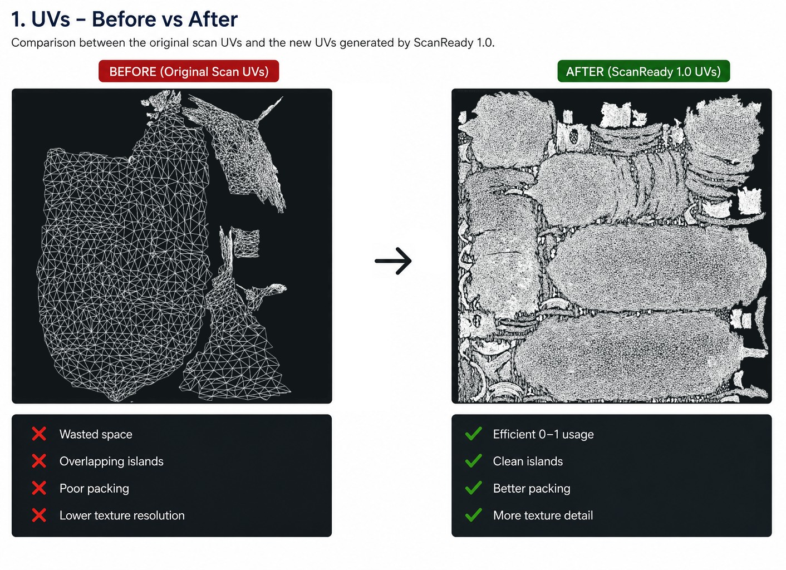
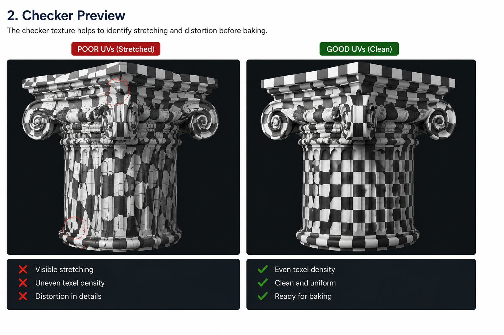
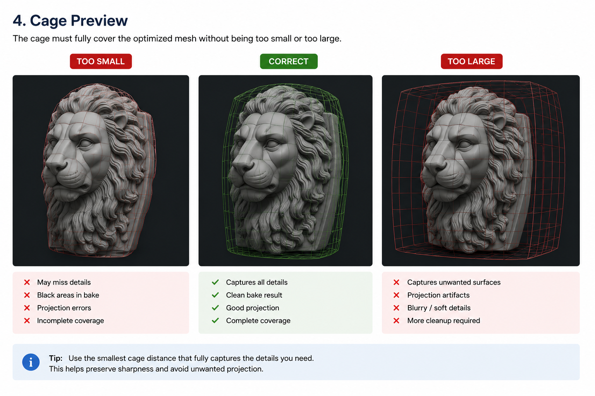
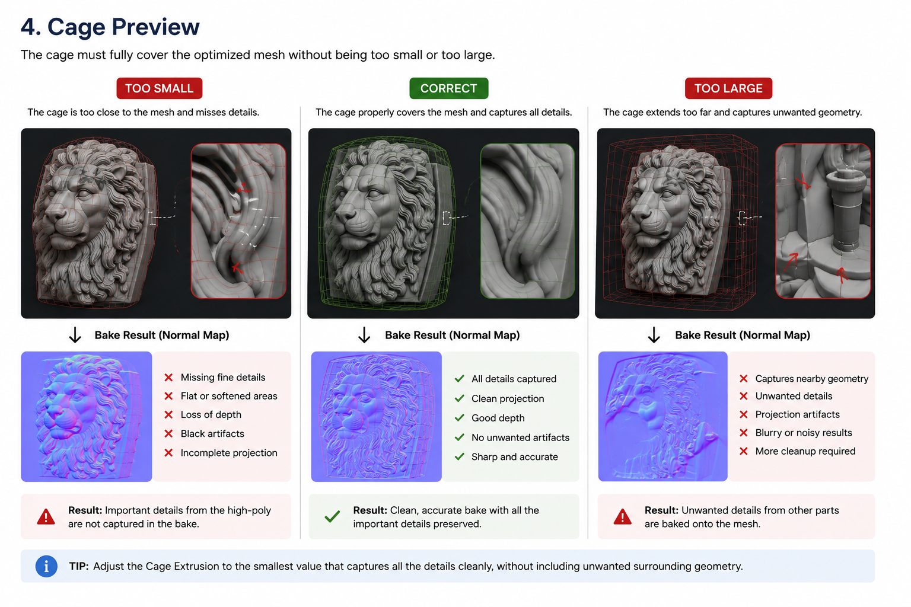

Step 2 - UV / Cage

Original scan UVs vs optimized UV packing generated by ScanReady 1.0.
Step 2 generates a new UV layout and prepares the baking cage.
After the scan has been simplified in Step 1, the optimized mesh needs clean UVs so texture information can be baked correctly onto the new lowpoly surface.
This step prepares the asset for texture transfer, allowing the optimized mesh to preserve much of the visual richness of the original high-poly scan while remaining lightweight enough for VR, videogames, AR, realtime visualization, and interactive environments.
Why UVs Are Needed
A simplified mesh is lighter and easier to manage, but it still requires coherent texture coordinates.
UVs define how the surface of the 3D model is unwrapped into 2D texture space.
After reduction, the original scan UVs should no longer be trusted on the optimized mesh.
Because geometry has been merged and simplified, the original UV layout can become:
- Stretched
- Distorted
- Overlapping
- Dirty
- Mismatched with the new lowpoly surface
Without fresh UVs, ScanReady 1.0 cannot properly transfer texture information from the original scan onto the optimized mesh.
Creating new UVs ensures cleaner baking and more reliable texture projection.

The checker preview helps reveal stretching, uneven texel density, and UV distortion before baking.
Better UV Space Usage
New UVs also improve texture space efficiency.
Many photogrammetry scans contain UV layouts that waste large portions of the available 0-1 texture space.
After optimization, ScanReady 1.0 can generate a cleaner UV layout with better UV packing and more efficient texture usage.

Better UV packing improves texture usage and baking efficiency.
This allows the optimized asset to preserve more detail while using fewer materials and lower texture memory.
Good UVs help produce:
- Cleaner baked textures
- Better texture sharpness
- Fewer visible seams
- Better realtime performance
- More reliable results in game engines
Textures Replace Geometry
The goal of baking is to preserve the visual richness of the original scan while reducing polygon density.
Instead of keeping millions of polygons, ScanReady transfers visual surface information into textures.
This allows the optimized mesh to remain lightweight while still preserving much of the original appearance.
Why the Cage Is Needed
The cage controls how Blender projects details from the high-poly scan onto the optimized mesh during baking.
If the cage is too small:
- Some details may be missed
- Black areas may appear
- Surface projection errors can occur
If the cage is too large:
- The bake may capture nearby unwanted surfaces
- Projection artifacts may appear
ScanReady 1.0 includes cage tools to make this process faster and easier.

Too small cages miss details. Too large cages may capture unwanted nearby surfaces.

Cage size directly affects the bake result: a correct cage captures details cleanly without projecting unwanted geometry.
UV Method
ScanReady 1.0 uses Smart UV Project to generate UVs for the optimized mesh.
Smart UV Project is Blender's automatic UV unwrap method.
It is useful for scanned objects because it can quickly generate UV islands without requiring manual seam placement.
ScanReady 1.0 exposes Smart UV controls so you can adjust how the unwrap behaves before baking.
UV Settings
These settings control how Smart UV Project unwraps the optimized mesh.

ScanReady 1.0 UV and Cage controls.
Smart UV Preset
Applies a recommended Smart UV angle.
Use it as a fast starting point for common scan types.
Smart UV Angle
Controls how aggressively Smart UV Project splits the mesh into islands.
Lower values create more cuts and more UV islands.
Higher values create larger UV islands.
UV Padding
Sets spacing between UV islands.
Increase padding to reduce texture bleeding, especially at lower texture resolutions.
Auto Pack UV
Automatically packs UV islands after unwrap.
Leave this enabled unless you want to arrange UV islands manually.
Better UV packing helps maximize texture resolution and preserve more texture detail.

Checker Preview
Use Show Checker to inspect UV stretching before baking.
The checker texture helps reveal:
- UV stretching
- Distortion
- Uneven texel density
- Problematic UV islands
A clean checker pattern usually indicates a healthier UV layout for baking.

Checker preview helps detect UV stretching and texel density issues.
Cage Controls
Show Cage
Displays the cage preview.
Use it before baking to check that the cage fully surrounds the optimized mesh.
Auto Cage Extrusion
Automatically estimates cage extrusion by sampling the distance between the optimized mesh and the original high-poly scan.
This is useful for generating a fast starting point without manually guessing the cage distance.
Cage Extrusion
Controls the cage distance manually.
Increase it if the bake misses details, creates black areas, or produces projection errors.
Use the smallest value that fully covers the scan surface cleanly.

Correct cage extrusion helps avoid missing details and baking projection errors.
Cage Alpha
Controls the cage preview opacity.
This only affects viewport display and does not change the baked result.

Action
Click Generate UVs after creating the lowpoly preview.
Then inspect:
- UV layout
- Checker preview
- Cage coverage
before continuing to:
What to Check
Before baking, verify that:
- UVs are generated on the optimized mesh
- UV islands are packed correctly
- The checker pattern does not show extreme stretching
- UV islands have enough padding
- The cage fully covers the areas that need baked detail
- The cage is not large enough to capture unwanted nearby surfaces
Realtime Optimization
For VR and videogame workflows, UVs and baking allow a lightweight model to still appear highly detailed.
The optimized mesh should preserve important visual information through textures rather than through millions of polygons.
Good UVs and a properly configured cage help keep the asset:
- Lighter
- Easier to render
- Easier to export
- More reliable in realtime engines
- Visually closer to the original scan